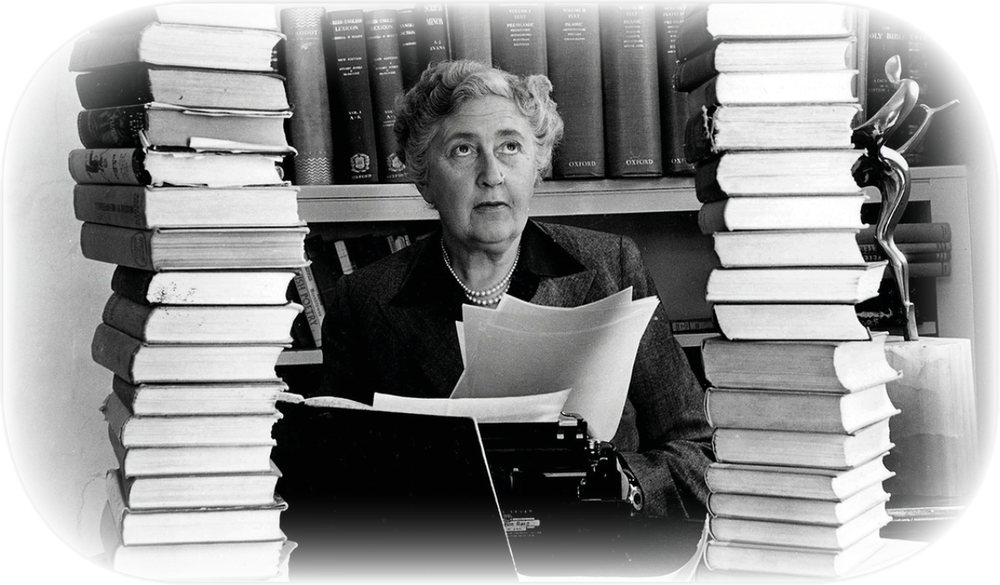

Содержание:
Семья
Первая мировая война
Первый брак
Начало карьеры
Исчезновение Агаты
Второй брак
Достижения писательницы
Дети и внуки
Ухудшение здоровья

Семья
Первая мировая война
Первый брак
Начало карьеры
Исчезновение Агаты
Второй брак
Достижения писательницы
Дети и внуки
Ухудшение здоровья
Агата Кристи (полное имя: Агата Мэри Кларисса Маллоуэн, урожденная Миллер) — английская писательница.
Дата рождения: 15 сентября 1890 г. , Торки, Великобритания
Дата смерти: 12 января 1976 г. , Уоллингфорд, Великобритания
Её родители были состоятельными переселенцами из Соединенных Штатов. Она была младшей дочерью в семье Миллеров. В семье Миллеров было еще двое детей: Маргарет Фрэри (1879—1950) и сын Луис Монтан «Монти» (1880—1929). Агата получила хорошее домашнее образование, в частности, музыкальное и только страх перед сценой помешал ей стать музыкант.
Во время Первой мировой войны Агата работала медсестрой в госпитале; ей нравилась эта профессия и она отзывалась о ней, как об «одной из самых полезных профессий, которой может заниматься человек». Она также работала фармацевтом в аптеке, что отложило впоследствии отпечаток на её творчестве: всего 83 преступления в её произведениях были совершены посредством отравления.
В первый раз Агата Кристи вышла замуж на Рождество в 1914 году за полковника Арчибальда Кристи, в которого была влюблена уже несколько лет — ещё когда он был лейтенантом. У них родилась дочь — Розалинда. Этот период стал началом творческого пути Агаты Кристи.
Писать будущая знаменитость стала совершенно случайно. Однажды, выздоравливая после болезни, Агата скучала и не знала чем себя занять. Тогда мать посоветовала ей написать рассказ. С матерью в доме Миллеров спорить было не принято, и Агата послушно принялась за дело. Тем более что старшая сестра Мадж не только написала, но и уже напечатала в журналах несколько рассказов. Свой первый детектив "Загадочное происшествие в Стайлзе" (опубликован в 1920 году) Кристи сочинила как бы играючи. Мадж как-то высказала сомнение в том, что Агата сумеет написать детектив. Пари в строгом значении слова заключено не было, но поскольку сестра во всём и всегда превосходила Агату, то последняя решила всерьёз доказать Мадж, на что она способна. Впрочем, рождение будущей королевы детектива прошло незамеченным: было продано около двух тысяч экземпляров, а гонорар составил... 25 фунтов.
В 1926 году умерла мать Агаты. В конце того же года муж Агаты Кристи, Арчибальд признался в неверности и попросил развод, поскольку влюбился в свою коллегу по гольфу Нэнси Нил. После ссоры в начале декабря 1926 года, Агата исчезла из своего дома, оставив письмо своему секретарю, в котором утверждала, что направилась в Йоркшир. Её исчезновение вызвало громкий общественный резонанс, поскольку у писательницы уже появились поклонники её творчества. В течение 11 дней о местонахождении Кристи ничего не было известно.
Был найден автомобиль Агаты, в салоне которого была обнаружена её шубка. Через несколько дней была обнаружена и сама писательница. Как оказалось, Агата Кристи зарегистрировалась под именем Тереза Нил в небольшом СПА-отеле Swan Hydropathic Hotel (теперь Old Swan Hotel). Кристи никак не объяснила свое исчезновение, а двое врачей диагностировали у неё амнезию, вызванную травмой головы. Причины исчезновения Агаты Кристи проанализированы британским психологом Эндрю Норманом в его книге «Готовый портрет» (англ. The Finished Portrait), где он в частности, утверждает, что гипотеза травматической амнезии не выдерживает никакой критики, поскольку поведение Агаты Кристи свидетельствовало об обратном: она зарегистрировалась в отеле под фамилией любовницы мужа, время проводила за игрой на фортепиано, спа-процедурами, посещением библиотеки. Тем не менее, изучив все свидетельства Норман пришел к выводу, что имела место диссоциативная фуга, вызванная тяжелым психическим расстройством.
По другой версии, исчезновение было задумано ей специально, чтобы отомстить мужу, которого полиция неизбежно заподозрила в убийстве писательницы.
Несмотря на взаимную привязанность в начале, брак Арчибальда и Агаты Кристи окончился разводом в 1928 году. В своем романе «Незаконченный портрет», опубликованном в 1934 году под псевдонимом Мэри Вестмакотт , Агата Кристи описывает события, похожие на её собственное исчезновение.
В 1930 году, путешествуя по Ираку, на раскопках в Уре она познакомилась со своим будущим супругом — археологом Максом Маллоуэном. Он был младше ее на 15 лет. Агата Кристи говорила о своем браке, что для археолога женщина должна быть как можно старше, ведь тогда ее ценность значительно возрастает. С тех пор она периодически проводила несколько месяцев в году в Сирии и Ираке в экспедициях вместе с мужем, этот период её жизни нашел отражение в автобиографическом романе «Расскажи, как ты живешь». В этом браке Агата Кристи прожила всю оставшуюся жизнь, до своей смерти в 1976 году.
Благодаря поездкам Кристи вместе с мужем на Ближний Восток, события нескольких её произведений произошли именно там. Местом действия других романов (например, «И никого не стало») был город Торки или его окрестности, место, где родилась Кристи. Роман «Убийство в Восточном экспрессе» 1934 года был написан в Отеле Пера Палас (англ. Hotel Pera Palace) в Стамбуле (Турция). В номере 411 отеля, где проживала Агата Кристи, теперь её мемориальный музей. Имение The Greenway Estate в Девоне, которое пара купила в 1938 году, находится под защитой Общества Охраны Памятников (англ. National Trust).
Кристи часто останавливалась в особняке Эбни Холл (англ. Abney Hall) в Чешире, который принадлежал её шурину Джеймсу Уотсу (англ. James Watts). Действие по крайней мере двух произведений Кристи происходило именно в этом имении: «Приключение рождественского пудинга», рассказ также включен в одноименный сборник, и роман «После похорон». «Эбни стал источником вдохновения для Агаты; отсюда были взяты описания таких мест, как Стайлз, Чимниз, Стоунгэйтс и других домов, которые в той или иной мере представляют собой Эбни».
В 1956 году Агата Кристи была награждена орденом Британской Империи, а в 1971 году за достижения в области литературы Агата Кристи была удостоена звания Кавалердама (англ. Dame Commander) ордена Британской Империи, обладательницы которого также приобретают дворянский титул «дама», употребляющийся перед именем. Тремя годами ранее, в 1968 титула Рыцаря ордена Британской Империи был удостоен и муж Агаты Кристи, Макс Маллоуэн за достижения в области археологии.
В 1958 году писательница возглавила английский Детективный клуб.
У Агаты была единственная дочь, Розалинда Маргарет Хикс. Она, как и мать, прожила 85 лет и умерла 28 октября 2004 года в Девоне. Внук Агаты Кристи, Мэтью Причард, унаследовал права на некоторые литературные произведения Агаты Кристи, и до сих пор его имя ассоциируется с фондом «Agatha Christie Limited».
В период с 1971 по 1974 годы здоровье Кристи стало ухудшаться, но несмотря на это она продолжала писать. Специалисты Университета в Торонто исследовали манеру письма Кристи в эти годы и выдвинули предположение, что Агата Кристи страдала болезнью Альцгеймера. В 1975 году, когда она совсем ослабела, Кристи передала все права на свою самую успешную пьесу «Мышеловка» своему внуку.
Писательница умерла 12 января 1976 года у себя дома в городе Уоллингфорд, Оксфордшир после короткой простуды и была похоронена в деревне Чолси. Ей было 85 лет. Автобиография Агаты Кристи, которую писательница окончила в 1965 году, заканчивается словами: «Спасибо тебе, Господи, за мою хорошую жизнь и за всю ту любовь, которая была мне дарована».
Последней изданной при жизни Агаты книгой был «Занавес». Кристи долго не решалась опубликовать его, словно предчувствуя, что это реквием. По сюжету повести в Стайлзе, месте действия первого романа, разгадав очередное убийство, Эркюль Пуаро погибает. Игра Пуаро завершилась, жизнь Агаты Кристи подошла к концу. Прощальное письмо Пуаро к Гастингсу – словно прощание Агаты с ее читателями. «Мы никогда уже больше не вступим вместе на тропинку из преступных следов. Но это была прекрасная жизнь! Ах, какая это была прекрасная жизнь!»
Смерть случилась через год после триумфа своей последней книги. «Отныне я живу в долг. Жду в прихожей вызова, который неминуемо последует, после чего я перейду куда-то еще. Я готова к встрече со смертью... Я всегда обожала эскимо. Однажды для дорогой старушки будет приготовлено изысканное холодное блюдо, и она уйдет по ледяной дороге – и больше не вернется...» "Автобиография" и "Последние расследования мисс Марпл" были опубликованы уже после ее смерти.